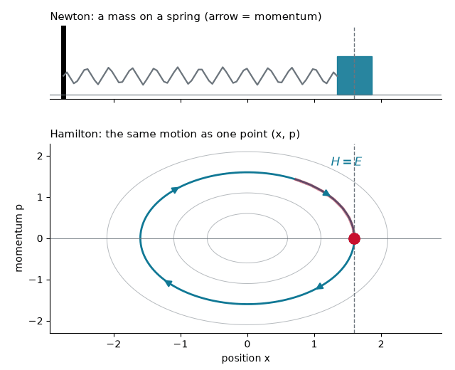
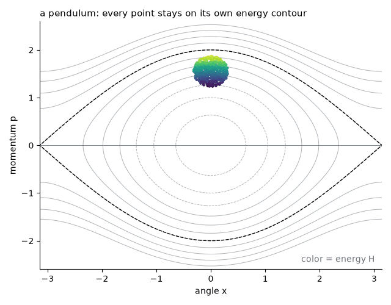
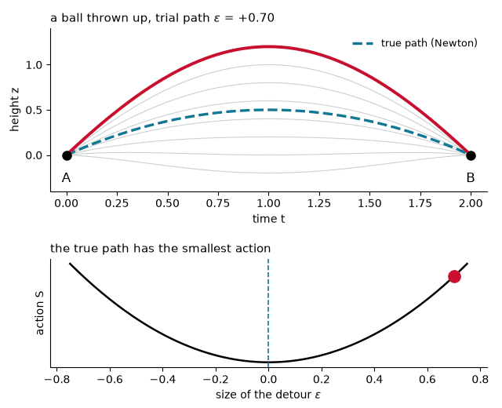
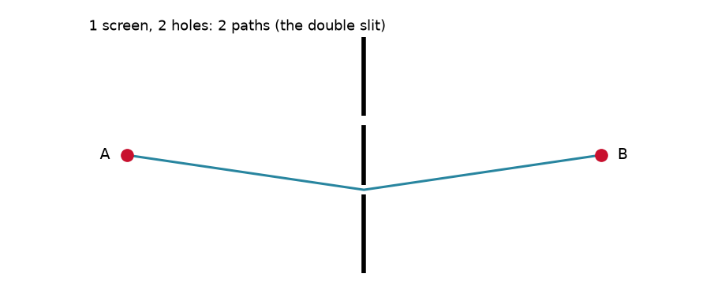
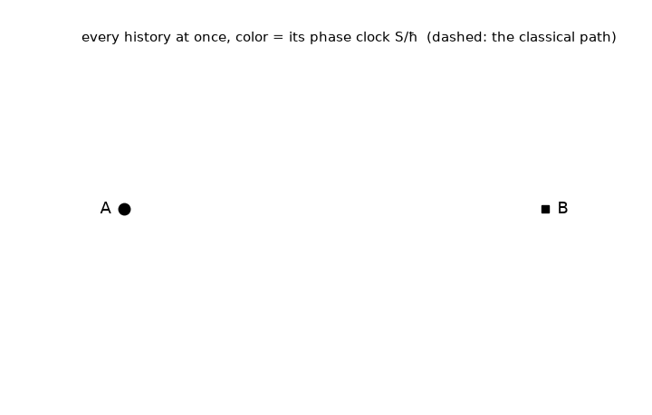
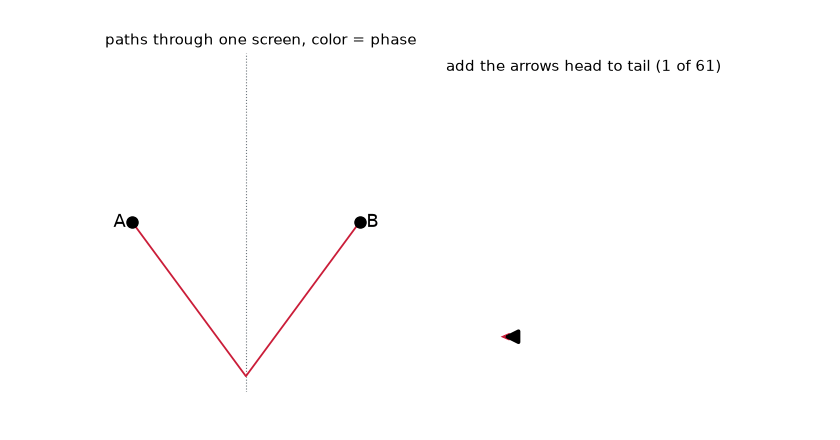
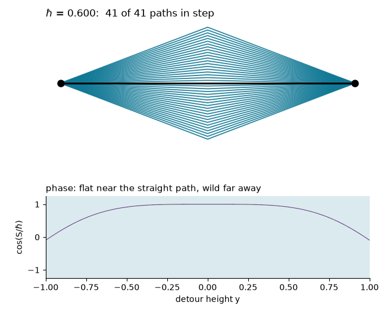
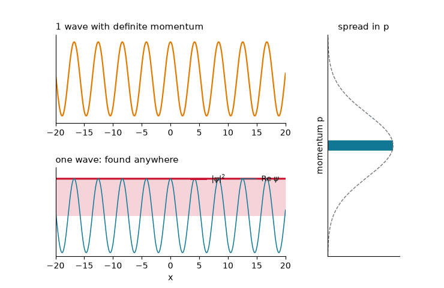
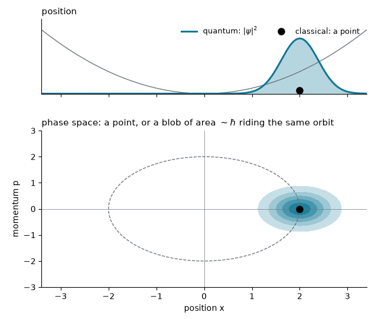

Chem 3240 · Lecture 3.1b · from Newton to Feynman
Newton: forces change the motion
m\,\frac{d^2x}{dt^2} = -\frac{dV}{dx}
Hamilton: the energy drives it
H(x,p) = \frac{p^2}{2m} + V(x)
\frac{dx}{dt} = \frac{\partial H}{\partial p} \qquad\qquad \frac{dp}{dt} = -\frac{\partial H}{\partial x}
The first says p = m\,dx/dt, the second says dp/dt = -dV/dx. Together: Newton’s law, the same physics.


Any quantity A(x, p) changes as
\frac{dA}{dt} = \{A, H\}
\{A,B\} = \frac{\partial A}{\partial x}\frac{\partial B}{\partial p} - \frac{\partial A}{\partial p}\frac{\partial B}{\partial x}

S = \int_{t_A}^{t_B} (K - V)\,dt
\delta S = 0


Going from A to B in time T through a hole at height y halfway: how much extra action does the detour cost?
Sideways speed 2y/T on both legs, for a total time T:
\Delta S = \frac{1}{2}m\left(\frac{2y}{T}\right)^{2} T = \frac{2m\,y^2}{T}
Smallest at y = 0: the straight line wins, as Newton says.

\psi(B) \;\propto \sum_{\text{paths}} e^{\,iS/\hbar}

Estimate \sqrt{\hbar T/m} for a 0.1 kg ball in flight for 1 s, and for an electron crossing a molecule in 10^{-15} s.
\text{ball:}\quad \sqrt{\frac{(1.05\times10^{-34})(1)}{0.1}} \approx 3\times10^{-17}\ \text{m}
\text{electron:}\quad \sqrt{\frac{(1.05\times10^{-34})(10^{-15})}{9.1\times10^{-31}}} \approx 3\times10^{-10}\ \text{m}
The ball’s band is far smaller than a proton; the electron’s is the size of an atom.

\psi(x) = \sum_k c_k\,e^{ikx}

Newton, Hamilton and least action all describe one classical path: a point in phase space sliding along its energy contour. Quantum mechanics keeps every path, each with a phase e^{iS/\hbar}. Where S \gg \hbar only the paths near the classical one survive; where S \sim \hbar many do, and the state is a blurry superposition.
Chem 3240 · Quantum Mechanics